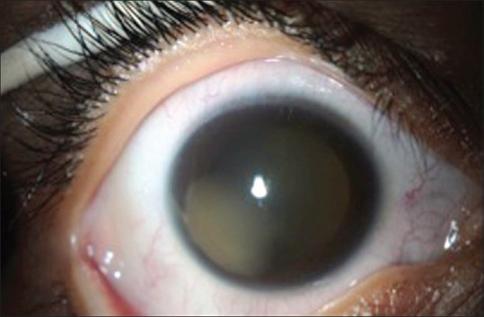
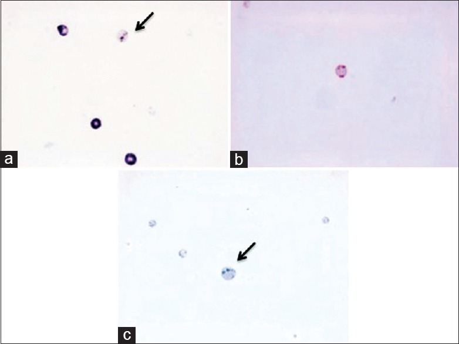
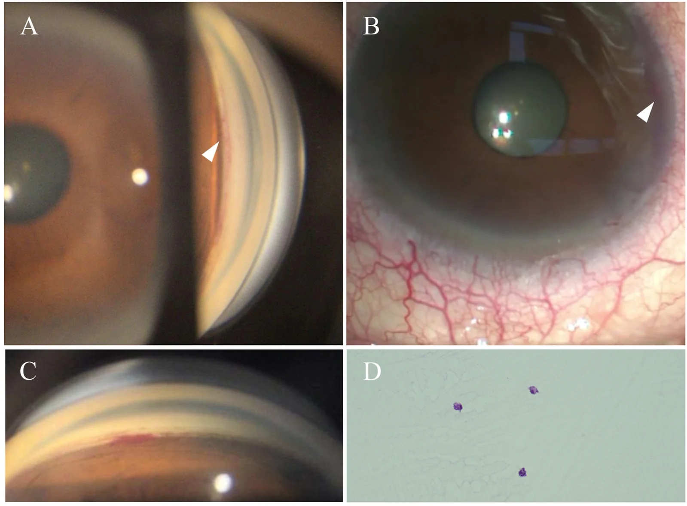

1457 — Glôcôm tế bào hồng cầu "ma" sau xuất huyết dịch kính: tế bào bạc màu bít bè, nhãn áp tăng MUỘN / Ghost cell glaucoma
Tags: pattern:glaucom-thu-phat pattern:te-bao-mao pattern:xuat-huyet-dich-kinh pattern:tang-nhan-ap vung:mat vung:tien-phong vung:goc-tien-phong vung:dich-kinh protocol:sinh-hieu-giac-mac protocol:gonioscopy protocol:do-nhan-ap protocol:B-scan score:IOP incidentaloma:khong
Mức chắc chắn (certainty): tổng hợp y văn (literature synthesis) — ghép loạt 71 mắt đái tháo đường tăng sinh sau tiêm ranibizumab (BMC Ophthalmology 2020, PMC7161240, CC BY 4.0), ca trẻ 10 tuổi chấn thương có cytology xác nhận (Middle East Afr J Ophthalmol 2016, PMC4968153, CC BY-NC-SA 3.0), ca muộn 45 tháng sau goniotomy có mô bệnh học (Am J Ophthalmol Case Rep 2026, PMC13734763, CC BY-NC-ND 4.0), ca trẻ 3 tuổi 9 tháng phối hợp tân mạch–tế bào ma (PMC10551837, CC BY-NC-ND 4.0), ca tan máu sau tiêm aflibercept (Am J Case Rep 2026, PMC13137914) và dịch tễ glôcôm thứ phát (PMC12350547, CC BY 4.0). Nhóm không có bệnh nhân của mình.
Câu chốt: trong xuất huyết dịch kính cũ, hồng cầu mất dần hemoglobin, trở thành tế bào "ma" (ghost cell) — tròn, cứng, mất khả năng biến dạng — nên khi qua được màng hyaloid trước bị rách vào tiền phòng, chúng bít cơ học bè củng mạc và gây glôcôm góc mở. Vì vậy bệnh cảnh kinh điển là: máu tiền phòng đã "tan", mắt hết đỏ, rồi nhãn áp vọt lên vài tuần–vài tháng sau — tế bào nhỏ, bạc màu "kaki", không flare, góc mở. Chẩn đoán nhầm thành viêm màng bồ đào (rồi cho corticoid) hoặc glôcôm góc mở nguyên phát là hai lỗi hay gặp nhất.
1. Tổng quan bệnh học – cơ chế hình ảnh (TẠI SAO)
1.1 Hồng cầu "chết" trong dịch kính: kho dự trữ lưu lượng thấp
- Dịch kính là kho lưu lượng thấp (low-turnover reservoir). Sau xuất huyết, hồng cầu nằm lại trong gel dịch kính — nơi không có dòng chảy và ít oxy — nên không được "rửa" và không được thay thế như trong tiền phòng. Đây là điều kiện để hồng cầu thoái hóa tại chỗ thay vì bị đào thải.
- Quá trình "thành ma" mất 1–3 tuần (Alamri 2016, PMC4968153): hồng cầu mất hemoglobin vào khoang ngoại bào, màng co lại thành hình cầu, phần hemoglobin còn lại kết đặc thành thể Heinz (Heinz bodies). Tế bào mất tính dẻo — đây mới là yếu tố quyết định bệnh sinh, không phải kích thước.
- TẠI SAO tế bào ma "bạc màu" (khaki/tan) trên sinh hiển vi: màu đỏ của hồng cầu là màu của hem, mà hem đã mất → tế bào chỉ còn khung màng + mảnh hemoglobin kết đặc, tán xạ ánh sáng yếu và lệch màu → xám-vàng-nâu nhạt. Đồng thời tế bào nhỏ hơn, tròn hơn, ít phản quang so với hồng cầu tươi.
- TẠI SAO tiền phòng KHÔNG tạo được tế bào ma: tiền phòng có dòng thủy dịch lưu thông nhanh + oxy cao, hồng cầu bị rửa trôi và ly giải trước khi kịp thoái hóa. Vì vậy máu tiền phòng đơn thuần (hyphema) hầu như không sinh ghost cell — phải có kho dịch kính làm nguồn.
- Điều kiện thứ hai: hàng rào hyaloid trước phải hở. Tế bào ma từ dịch kính vào tiền phòng qua màng hyaloid trước bị rách — sau chấn thương, phaco, cắt dịch kính, goniotomy, hoặc đôi khi tự nhiên. Đây là lý do bệnh xuất hiện ở mắt đã can thiệp hoặc đã chấn thương, hiếm khi ở mắt nguyên vẹn.
1.2 TẠI SAO nhãn áp tăng: bít khe lọc, không phải viêm
- Bè củng mạc là lưới collagen có khe lọc rất hẹp; hồng cầu tươi biến dạng được nên lọt qua, còn tế bào ma cứng, hình cầu nên kẹt lại ở lớp bè → tăng sức cản thoát lưu → IOP tăng theo kiểu góc mở.
- Không có phản ứng viêm: tế bào ma không tiết cytokine, nên không flare, không KP, không dính đồng tử. Đây là chốt loại viêm quan trọng nhất trên sinh hiển vi.
- IOP tăng nhanh nhưng mắt "yên": mắt có thể chỉ hơi đau, nhìn mờ do phù giác mạc, không đỏ nhiều — nên bệnh nhân đến muộn hoặc bị bỏ qua khi "máu đã tan".
1.3 Số liệu định lượng nằm lòng
| Đại lượng | Số liệu | Nguồn |
|---|---|---|
| Thời gian hồng cầu thành tế bào ma trong dịch kính | 1–3 tuần; tồn tại nhiều tháng sau khi máu đã tan | PMC4968153 |
| Tỉ lệ sau tiêm anti-VEGF ở mắt đái tháo đường tăng sinh (PDR) | 8/71 mắt = 11,3% | PMC7161240 |
| IOP đỉnh trong loạt 8 mắt | 46,5 ± 8,0 mmHg | PMC7161240 |
| Thời điểm phát hiện sau tiêm | 0–48 giờ (2 mắt > 30 mmHg trong 30 phút; 4 mắt bình thường ở 30 phút rồi tăng < 1 ngày) | PMC7161240 |
| Yếu tố nguy cơ (hồi quy logistic) | Bong võng mạc co kéo: RR 4,60 (KTC 2,02–8,48, p = 0,004); màng xơ mạch tới đĩa: RR −3,57; AUC 0,88 | PMC7161240 |
| Ca chấn thương ở trẻ | 10 tuổi, 3+ tế bào kaki, 30% góc rẽ, IOP 37 mmHg dù 3 thuốc | PMC4968153 |
| Ca muộn sau goniotomy | 45 tháng, IOP 45,1–45,3 mmHg, B-scan không thấy xuất huyết dịch kính, mô bệnh có tế bào ma | PMC13734763 |
| Ca trẻ phối hợp | 3 tuổi 9 tháng, IOP 45 mmHg, ánh vàng tiền phòng, cytology không có tế bào (âm tính giả) | PMC10551837 |
| Ca tan máu sau tiêm (đối chứng) | IOP 50 mmHg ngày 7, KHÔNG thấy tế bào kaki rõ | PMC13137914 |
| Glôcôm thứ phát trong dân số khám glôcôm | 208/1.403 = 14,83% ca khám lần đầu | PMC12350547 |
Đọc số cho đúng: 11,3% trong loạt PMC7161240 là sau tiêm anti-VEGF ở mắt PDR có bong võng mạc co kéo — không phải tỉ lệ chung của mọi xuất huyết dịch kính. Con số này cho thấy bối cảnh (PDR + bong co kéo + màng xơ mạch) mới là yếu tố quyết định, không phải "tiêm thuốc".
2. Mẫu hình + chẩn đoán phân biệt theo cơ chế và thời điểm (Gamut)
- Nhóm A — sau xuất huyết dịch kính ≥ 1–3 tuần (thể kinh điển): tế bào nhỏ, kaki, lơ lửng, lắng ở nửa dưới tiền phòng; góc mở, không dính; không flare; IOP 30–70 mmHg. Nguồn dịch kính: PDR, chấn thương, hội chứng Terson, xuất huyết dịch kính sau phẫu thuật.
- Nhóm B — sớm sau xuất huyết (giờ–ngày): hồng cầu tươi (đỏ, đậm), có thể mức máu – dịch (hyphema), IOP tăng do bít bằng hồng cầu tươi + cục máu. Khác nhóm A ở màu và thời điểm, không phải cơ chế.
- Nhóm C — tan máu (haemolytic glaucoma): mảnh hồng cầu, hemoglobin tự do, đại thực bào chứa hemosiderin bít bè; xuất hiện vài ngày–vài tuần, thường sau hyphema hơn là xuất huyết dịch kính. Trên lâm sàng khó phân biệt tuyệt đối với nhóm A — nhiều tác giả coi là một phổ sau xuất huyết (PMC13137914).
- Nhóm D — viêm: tế bào + flare + KP + dính đồng tử + đau đỏ; IOP có thể cao do viêm bè. Chốt loại ghost cell: không flare.
- Nhóm E — thể thủy tinh: phacolytic (đại thực bào to, dịch tiền phòng như sữa, thể thủy tinh chín), phacoantigenic, mảnh thể thủy tinh sót; tế bào to, có thể kèm hạt, thường một mắt sau phaco cũ.
- Nhóm F — tân mạch (NVG): tân mạch mống mắt/góc, fibrin, tế bào; IOP cao kèm bệnh võng mạc thiếu máu. Có thể phối hợp với ghost cell (PMC10551837) — gọi là glôcôm hỗn hợp.
- Nhóm G — sắc tố & dầu silicon: hội chứng phân tán sắc tố (tế bào sắc tố + Krukenberg spindle); dầu silicon trong tiền phòng (giọt dầu + tế bào giả) — bối cảnh mắt bơm dầu (bài 1416/1864).
- Nhóm H — do thuốc: tăng nhãn áp do corticoid (không tế bào, tiền sử nhỏ corticoid ≥ 2–4 tuần) — đây là bẫy khi bệnh nhân được cho corticoid vì "nghĩ viêm".
Ba câu hỏi định vị (dùng trước khi kết luận): (1) Có xuất huyết dịch kính cũ / mắt đã mổ – chấn thương không? (2) Tế bào nhỏ bạc màu, có flare không? (3) Góc mở hay dính/tân mạch?
3. Bảng so sánh phân biệt (ma trận đối chiếu)
| Thực thể (entity) | Hình ảnh điển hình (sinh hiển vi / góc / siêu âm) | Chốt vào (rule-in) | Chốt loại (rule-out) | Gợi ý xác nhận |
|---|---|---|---|---|
| Glôcôm tế bào ma | Tế bào nhỏ, tròn, kaki, lơ lửng và lắng nửa dưới; không flare; góc mở; B-scan có/không còn máu dịch kính | Tiền sử xuất huyết dịch kính ≥ 1–3 tuần + tế bào kaki không flare + góc mở + IOP tăng | Flare/KP/dính đồng tử → viêm; tân mạch góc → NVG; tế bào to có hạt → thể thủy tinh | Soi sinh hiển vi đèn hẹp, đo IOP 2 mắt, gonioscopy; cytology thủy dịch khi không chắc |
| Hồng cầu tươi (hyphema) | Tế bào đỏ, đậm, có thể mức máu ngang, đông cục; mắt đỏ | Máu toàn phần + mức dịch ngang + mới trong giờ–ngày | Tế bào nhạt màu, không mức máu → tế bào ma | Soi đèn hẹp: màu và tỉ trọng tế bào; hỏi mốc chấn thương |
| Tan máu (haemolytic) | Dịch tiền phòng nâu đỏ, mảnh tế bào, đại thực bào; thường sau hyphema | Hyphema vài ngày–vài tuần + IOP tăng + không tế bào kaki rõ | Tế bào kaki rõ + xuất huyết dịch kính cũ → ghost cell | Cytology (hemosiderin), bối cảnh |
| Viêm màng bồ đào | Flare + KP + dính đồng tử + co đồng tử, đau đỏ | Flare/KP/dính + đáp ứng corticoid | Không flare, đồng tử không dính, tế bào kaki | Đèn hẹp; thử corticoid có kiểm soát IOP |
| Phacolytic / phacoantigenic | Tế bào to, dịch như sữa, thể thủy tinh chín; có thể giả áp-xe | Thể thủy tinh chín + tế bào to + một mắt | Tế bào nhỏ kaki + xuất huyết dịch kính → ghost cell | Soi thể thủy tinh, siêu âm; xử trí phaco |
| NVG | Tân mạch mống mắt/góc, fibrin, đồng tử giãn dính | Tân mạch góc/mống mắt + bệnh võng mạc thiếu máu | Góc mở không tân mạch → không NVG | Gonioscopy, FA/đáy mắt |
| Tăng nhãn áp do corticoid | Tiền phòng trong, không tế bào; tiền sử nhỏ corticoid | Dùng corticoid 2–4 tuần + không tế bào + giảm khi ngừng | Có tế bào kaki → không đơn thuần do corticoid | Ngừng corticoid, theo dõi IOP |
| Dầu silicon / sắc tố | Giọt dầu lóng lánh, bờ ngang; sắc tố + Krukenberg | Tiền sử bơm dầu; sắc tố + mống mắt lõm | Tế bào kaki lơ lửng đều → ghost cell | Đèn hẹp, UBM/gonioscopy |
Dấu hiệu đọc đúng thứ tự trên đèn hẹp
- Màu tế bào: đỏ = tươi; kaki/xám = thoái hóa.
- Kích thước: nhỏ đều = hồng cầu; to, không đều = đại thực bào/viêm.
- Flare: có = viêm; không = bít cơ học.
- Vị trí lắng: nửa dưới (trọng lực) — cả hai thể đều lắng, nên không phân biệt được bằng vị trí.
- Góc: mở + không tân mạch + có máu cũ ở góc (gonioscopy) là chốt.
4. Protocol khám + ngưỡng xử trí
4.1 Khám tối thiểu khi "nhãn áp tăng sau xuất huyết dịch kính"
- Đo IOP cả hai mắt (Goldmann; trẻ nhỏ dùng iCare/pneumotonometry), ghi giờ đo và thuốc đang dùng.
- Sinh hiển vi đèn hẹp: đếm tế bào, mô tả màu/kích thước, tìm flare, KP, dính đồng tử, tân mạch mống mắt, mức máu.
- Gonioscopy: góc mở/đóng, máu cũ ở góc, góc rẽ (angle recession), tân mạch. Ở trẻ không hợp tác → khám dưới mê.
- B-scan: còn máu dịch kính, bong võng mạc, màng xơ mạch; B-scan bình thường KHÔNG loại trừ ghost cell (PMC13734763).
- Siêu âm sinh hiển vi (UBM)/AS-OCT khi cần xác định màng hyaloid trước, dầu silicon, vị trí mảnh.
- Cytology thủy dịch (Giemsa/H&E): chỉ khi chẩn đoán không rõ; âm tính giả đã gặp (PMC10551837) → không dùng để loại trừ.
4.2 Ngưỡng và bậc điều trị
flowchart TD
A[Xuất huyết dịch kính cũ + IOP tăng] --> B{Tế bào nhỏ kaki, KHÔNG flare?}
B -->|Không| C[Đi nhánh khác: viêm / NVG / thể thủy tinh / corticoid]
B -->|Có| D[Ghost cell glaucoma]
D --> E{IOP và triệu chứng}
E -->|IOP < 30, không đau| F[Theo dõi sát + hạ áp tại chỗ]
E -->|IOP 30-40| G[Thuốc hạ áp: chẹn beta, alpha-2, CAI; KHÔNG pilocarpine]
E -->|IOP > 40 hoặc phù giác mạc| H[Rửa tiền phòng / chọc giải áp]
H --> I{Còn kho tế bào trong dịch kính?}
I -->|Có, tái phát| J["Cắt dịch kính (PPV) lấy kho tế bào"]
I -->|Không| K[Theo dõi]
J --> L[Kiểm soát IOP; trabeculectomy nếu kháng trị]
- Thuốc: ức chế thủy dịch (chẹn beta tại chỗ, alpha-2 agonist, ức chế carbonic anhydrase tại chỗ/uống). Pilocarpine không có vai trò — co đồng tử không mở được bè đã bị bít và có thể làm tăng viêm/đau.
- Rửa tiền phòng (AC washout/lavage) khi IOP cao, phù giác mạc, hoặc tế bào dày đặc: lấy đi nguồn tế bào tại chỗ; có thể phải lặp lại.
- Cắt dịch kính (PPV) khi còn kho tế bào trong dịch kính (máu cũ, bong co kéo) hoặc tái phát sau rửa: mục tiêu là loại bỏ kho dự trữ, không chỉ hạ áp.
- Trabeculectomy / van khi tổn thương bè không hồi phục hoặc thấm máu giác mạc (corneal blood staining).
- Điều trị bệnh nền: kiểm soát PDR (PRP/anti-VEGF), xử lý bong võng mạc co kéo, ngừng corticoid không cần thiết.
4.3 Bảng ngưỡng thực hành
| Tình huống | Ngưỡng / hành động | Ghi chú |
|---|---|---|
| IOP tăng nhẹ, mắt không triệu chứng | < 30 mmHg: theo dõi 1–3 ngày/lần đến khi ổn định | Ghost cell có thể tự giới hạn |
| IOP trung bình | 30–40 mmHg: thuốc hạ áp tối đa | Tránh pilocarpine |
| IOP cao / phù giác mạc | > 40 mmHg hoặc giảm thị lực: rửa tiền phòng | Rửa sớm tốt hơn chờ |
| Tái phát sau rửa | ≥ 2 lần tái phát: PPV | Loại bỏ kho tế bào |
| Thấm máu giác mạc | Chỉ định phẫu thuật sớm | Yếu tố tiên lượng xấu |
5. Biến thể bình thường và cạm bẫy
- "Máu đã tan" không có nghĩa là hết bệnh: IOP có thể bình thường vài tuần rồi tăng (thể muộn 45 tháng sau goniotomy, PMC13734763). Hỏi mốc xuất huyết dịch kính cũ là bước không được bỏ.
- Tế bào ma không chỉ sau xuất huyết dịch kính tự phát: đã gặp sau goniotomy/GATT (máu trào ngược từ góc), sau phaco, sau cắt dịch kính. B-scan không có máu vẫn có thể có tế bào ma trong tiền phòng.
- Âm tính giả của cytology: mẫu 0,1 mL, không cell block, không đếm tế bào → có thể không thấy tế bào dù bệnh thật (PMC10551837). Không loại trừ dựa vào cytology.
- Chẩn đoán nhầm viêm: cho corticoid sẽ làm tăng IOP và che mất bệnh; nếu nghi ngờ, không flare là chốt loại.
- Bỏ sót góc rẽ (angle recession): 30% trong ca trẻ chấn thương (PMC4968153); cơ chế hỗn hợp → cần gonioscopy và theo dõi dài hạn.
- Nhầm với glôcôm góc mở nguyên phát: bệnh nhân trẻ, có chấn thương/mổ cũ, một mắt → không gọi POAG khi chưa loại ghost cell.
- Thấm máu giác mạc (corneal blood staining): có thể xuất hiện dù IOP không cao; khi máu tan và IOP kiểm soát, có thể tự hồi phục (PMC4968153) — nhưng cần theo dõi nội mô.
- Tăng IOP thoáng qua sau tiêm nội nhãn (bài 1427) khác ghost cell: tăng trong phút–giờ rồi tự về, không tế bào kaki; còn ghost cell sau tiêm PDR có thể 0–48 giờ (PMC7161240) — bối cảnh PDR/bong co kéo là điểm phân biệt.
6. Tự lượng giá — Blind Quiz
Ca 1 — Bé trai 10 tuổi, chấn thương đụng dập mắt phải 1 tháng trước, "máu tiền phòng đã hết" nhưng mắt mờ dần.

- Gợi ý lâm sàng: thị lực HM, IOP 20 mmHg lúc đầu, sau 2 tuần tăng 37 mmHg dù 3 thuốc; 3+ tế bào kaki, góc rẽ 30%; B-scan: máu dịch kính đặc, võng mạc áp.
- Câu hỏi: (1) Tế bào trong tiền phòng là loại gì? (2) Vì sao IOP tăng sau khi máu tiền phòng đã tan? (3) Hai chẩn đoán phân biệt và một dấu hiệu loại chúng?
Bấm để hiện đáp án (findings + chẩn đoán)
- Dấu hiệu: 3+ tế bào kaki, không flare, góc mở có 30% góc rẽ; B-scan: xuất huyết dịch kính đặc. Giác mạc có thấm máu dạng dải (ảnh).
- Chẩn đoán: glôcôm tế bào ma sau xuất huyết dịch kính do chấn thương, cơ chế hỗn hợp với góc rẽ. Máu tiền phòng tan nhưng kho tế bào trong dịch kính vẫn còn → tiếp tục bít bè.
- Vì sao: hồng cầu mất hemoglobin trong dịch kính 1–3 tuần, mất tính biến dạng → kẹt ở bè; không viêm nên không flare.
- Xử trí trong ca gốc: PPV + rửa tiền phòng, cytology xác nhận tế bào ma; sau mổ IOP ổn, thị lực 20/40; 2 năm sau phaco, thấm máu giác mạc tự hồi phục.
- Nguồn ảnh: Alamri A, Alkatan H, Aljadaan I. Middle East Afr J Ophthalmol 2016;23:271–273 (PMC4968153), CC BY-NC-SA 3.0 — nguyên bản, không crop/ghép.
Ca 2 — Cùng bệnh nhân, mẫu thủy dịch được nhuộm để tìm nguyên nhân bít bè.

- Câu hỏi: Ba tiêu bản cho thấy loại tế bào nào? Dấu hiệu nào trên tiêu bản chứng minh tế bào đã thoái hóa?
Bấm để hiện đáp án
- Dấu hiệu: (a) Giemsa: nhiều hồng cầu, một số thoái hóa (mũi tên); (b) H&E: tế bào mất màu, màng nhăn; (c) xanh methylen: thể Heinz dạng chấm đậm trong tế bào (mũi tên).
- Chẩn đoán: tế bào ma (ghost cells) — hồng cầu mất hemoglobin, còn thể Heinz.
- Vì sao: hemoglobin bị mất vào dịch kính; phần còn lại kết đặc trên mặt trong màng → thể Heinz, dấu hiệu mô học đặc trưng.
- Nguồn ảnh: PMC4968153, Fig. 2; CC BY-NC-SA 3.0 — nguyên bản, không crop/ghép.
Ca 3 — Nam 73 tuổi, tăng nhãn áp 45 mmHg sau "mổ glôcôm vi phẫu" 45 tháng; B-scan không thấy máu dịch kính.

- Gợi ý: tiền sử goniotomy 120° bằng móc Tanito; ngày 1 sau mổ có máu tiền phòng 1 mm; IOP ổn 14–18 mmHg trong 3 năm; nay 45,1 mmHg, giác mạc phù, máu lắng ở góc 6 giờ.
- Câu hỏi: (1) Vì sao ghost cell xuất hiện muộn dù không có xuất huyết dịch kính? (2) Dấu hiệu nào trên gonioscopy gợi ý đường vào của máu? (3) Xử trí?
Bấm để hiện đáp án
- Dấu hiệu: (A) dải máu tại vị trí goniotomy cũ; (B) khi giải áp tiền phòng, máu trào ngược từ góc mũi (đúng vị trí mổ); (C) máu lắng ở góc 6 giờ; (D) H&E: hồng cầu thoái hóa + tế bào ma.
- Chẩn đoán: glôcôm góc mở thứ phát do trào máu muộn + thành phần tế bào ma, 45 tháng sau goniotomy.
- Vì sao: đường lọc bè đã mở vẫn là đường cho máu trào ngược khi áp lực tĩnh mạch củng mạc > IOP; hồng cầu thoái hóa tại góc/tiền phòng (không cần kho dịch kính lớn) rồi bít bè.
- Xử trí: rửa tiền phòng/giải áp không kiểm soát bền → trabeculectomy + MMC; IOP 10 mmHg sau 11 tháng.
- Nguồn ảnh: Zhang M, Jia J, Tan J, Gao X. Am J Ophthalmol Case Rep 2026;44:102686 (PMC13734763), Fig. 1; CC BY-NC-ND 4.0 — chỉ đổi định dạng webp→jpg, không crop/không ghép.
Bài liên quan chéo
- 1444 – Viêm màng bồ đào sau chấn thương
- 449 – Chấn thương mắt & dị vật nội nhãn
- 1452 – Glôcôm do thể thủy tinh chưa mổ (phacolytic)
- 1411 – Tăng nhãn áp do corticoid nội nhãn
- 1427 – Tiêm anti-VEGF hai mắt cùng ngày: kỹ thuật & biến chứng
- 1416 – Glôcôm do dầu silicon
- 1864 – Dầu silicon nặng (HSO): biến chứng phía dưới
Không dùng để chẩn đoán độc lập khi chưa có người hướng dẫn.